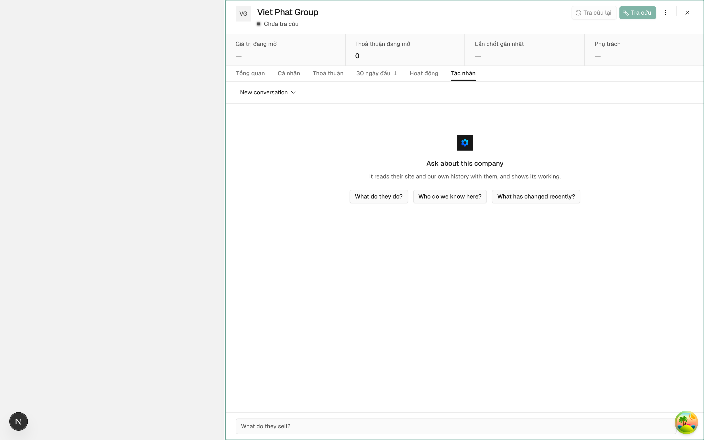
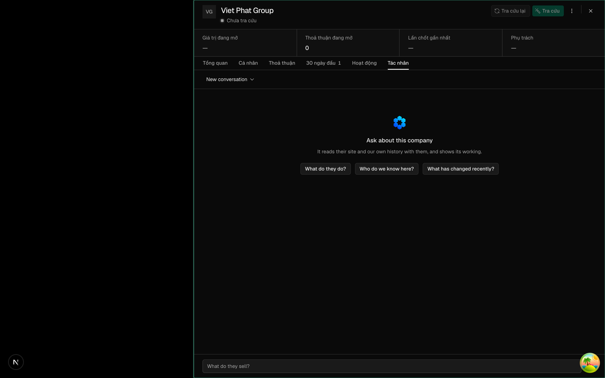
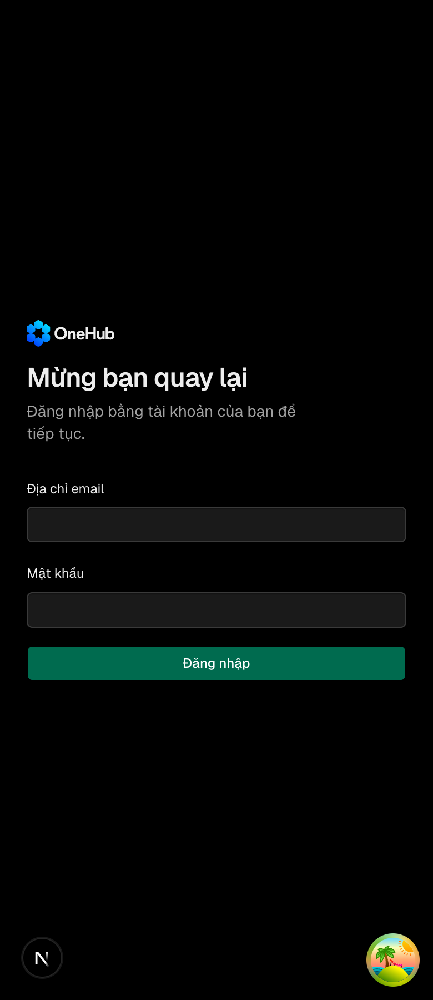
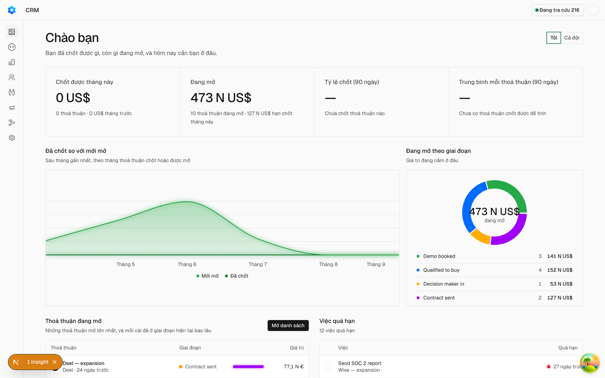
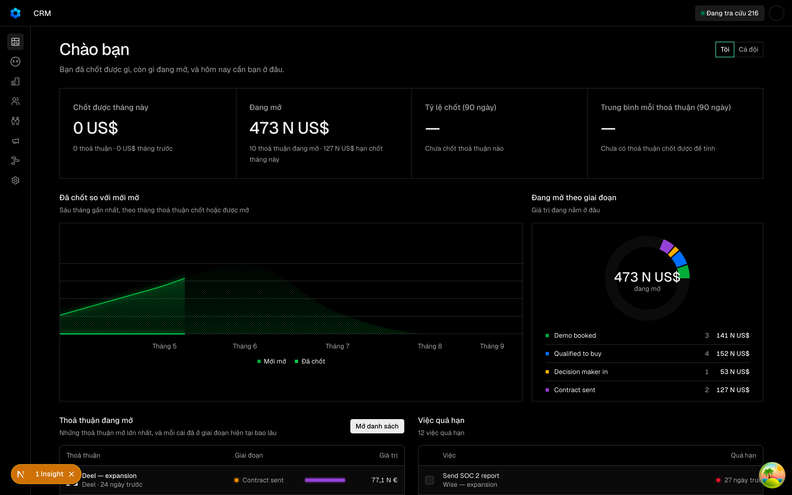

Mọi logo Comp AI trong CRM đổi sang logo OneHub — mark dựng lại bằng hình học trùng ảnh gốc từ 98% trở lên và căn đúng tâm, bản kèm chữ OneHub ở trang đăng nhập, bộ favicon và icon cài app sinh từ cùng một nguồn, và PNG đúng cỡ cho Slack, Zalo, Google
Các eval
| Eval | Tiêu chí | Loại | Verdict | run_id | verified_at |
|---|---|---|---|---|---|
| E1 | AC-1 | test | PASS | minted-logo-onehub-E1-r3 | 2026-09-25T10:04:47Z |
| E2 | AC-2 | test | PASS | minted-logo-onehub-E2-r3 | 2026-09-25T10:04:47Z |
| E3 | AC-3 | test | PASS | minted-logo-onehub-E3-r3 | 2026-09-25T10:04:47Z |
| E4 | AC-4 | test | PASS | minted-logo-onehub-E4-r3 | 2026-09-25T10:04:47Z |
| E5 | AC-4 | test | PASS | minted-logo-onehub-E5-r3 | 2026-09-25T10:04:47Z |
| E6 | AC-5 | test | PASS | minted-logo-onehub-E6-r3 | 2026-09-25T10:04:47Z |
| E7 | AC-6 | test | PASS | minted-logo-onehub-E7-r3 | 2026-09-25T10:04:47Z |
| E8 | AC-7 | test | PASS | minted-logo-onehub-E8-r3 | 2026-09-25T10:04:47Z |
| E9 | AC-8 | test | PASS | minted-logo-onehub-E9-r3 | 2026-09-25T10:04:47Z |
| E10 | AC-9 | script | PASS | minted-logo-onehub-E10-r3 | 2026-09-25T10:04:47Z |
| E11 | AC-10 | ui-check | PASS | minted-logo-onehub-E11-r3 | 2026-09-25T10:04:47Z |
| E12 | AC-3 | script | PASS | minted-logo-onehub-E12-r3 | 2026-09-25T10:04:47Z |
| E13 | AC-11 | script | PASS | minted-logo-onehub-E13-r3 | 2026-09-25T10:04:47Z |
| E14 | AC-11 | script | PASS | minted-logo-onehub-E14-r3 | 2026-09-25T10:04:47Z |
Chi tiết từng eval
PASS E1 · test
AC-1: Given path mark trong `packages/ui/src/lib/logo-onehub.ts` và ảnh gốc `packages/ui/scripts/logo-goc/logo-mark.png` (625×622), When dựng mark lên đúng lưới 625×622 tại toạ độ tâm đã khai và so kênh alpha, Then IoU mềm ≥ 0,98; và trên các điểm ảnh đục của cả hai, sai số trung bình bình phương mỗi kênh màu R, G, B ≤ 8/255.
4 pass 0 fail Ran 4 tests across 1 file. [143.00ms]
PASS E2 · test
AC-2: Given `Logo` render ra ảnh vuông, When đo khung bao của phần đục, Then tâm khung bao lệch tâm ảnh không quá 1% cạnh ảnh theo cả hai trục (ảnh gốc lệch 76px ≈ 12%).
4 pass 0 fail Ran 4 tests across 1 file. [143.00ms]
PASS E3 · test
AC-3: Given một trang render hai `Logo` cạnh nhau, When đọc DOM, Then mỗi `svg` có `role="img"` và `aria-label="OneHub"`, hai `linearGradient` mang hai `id` khác nhau, và `fill` của path mỗi logo trỏ `url(#id)` tới đúng `linearGradient` nằm trong chính `svg` đó; `className` và `aria-hidden` truyền vào đè được giá trị mặc định.
0 fail 8 expect() calls Ran 7 tests across 1 file. [595.00ms]
PASS E4 · test
AC-4: Given `LogoLockup` và ảnh gốc `logo-horizontal.png` (2048×622), When dựng lên cùng lưới và so alpha riêng vùng mark và riêng vùng chữ, Then IoU vùng mark ≥ 0,98 và vùng chữ ≥ 0,98; path chữ mang `fill="currentColor"`; hai `LogoLockup` trên một trang có `id` dải màu khác nhau; `svg` có `role="img"` và `aria-label="OneHub"`.
4 pass 0 fail Ran 4 tests across 1 file. [143.00ms]
PASS E5 · test
AC-4: Given `LogoLockup` và ảnh gốc `logo-horizontal.png` (2048×622), When dựng lên cùng lưới và so alpha riêng vùng mark và riêng vùng chữ, Then IoU vùng mark ≥ 0,98 và vùng chữ ≥ 0,98; path chữ mang `fill="currentColor"`; hai `LogoLockup` trên một trang có `id` dải màu khác nhau; `svg` có `role="img"` và `aria-label="OneHub"`.
0 fail 8 expect() calls Ran 7 tests across 1 file. [595.00ms]
PASS E6 · test
AC-5: Given bộ icon trong `apps/app`, When đọc từng file, Then `app/favicon.ico` và `public/favicon.ico` giống nhau từng byte và mỗi file chứa đúng ba ảnh 16, 32, 48px; `favicon-96x96.png` là 96×96; `apple-touch-icon.png` là 180×180 và mọi điểm ảnh đục hoàn toàn, bốn góc trắng; `web-app-manifest-192x192.png` và `-512x512.png` đúng cỡ, đục hoàn toàn, và mọi điểm ảnh khác nền trắng nằm trong vòng tròn bán kính 40% cạnh, tâm ở giữa ảnh; `favicon.svg` có `viewBox` vuông và dải màu hai điểm dừng `#0045FF`, `#02D7FF`.
0 fail 3 expect() calls Ran 11 tests across 1 file. [327.00ms]
PASS E7 · test
AC-6: Given script sinh icon và nguồn `logo-onehub.ts` hiện tại, When sinh lại toàn bộ bộ icon trong bộ nhớ, Then điểm ảnh giải mã của từng file trong kho trùng khít bản vừa sinh — không file raster nào sửa tay hay sót bản cũ.
0 fail 3 expect() calls Ran 11 tests across 1 file. [327.00ms]
PASS E8 · test
AC-7: Given `apps/app/public/site.webmanifest`, When đọc, Then `name` là «OneHub CRM», `short_name` là «OneHub», và hai icon 192, 512 vẫn khai `purpose: "maskable"`.
0 fail 3 expect() calls Ran 11 tests across 1 file. [327.00ms]
PASS E9 · test
AC-8: Given một thư mục ngoài kho, When chạy script với `--external <thư mục>`, Then thư mục đó có `slack-app-icon-1024.png` (1024×1024), `zalo-bot-avatar-512.png` (512×512, mark nằm trong vòng tròn bán kính 40% cạnh) và `google-oauth-logo-120.png` (120×120, dưới 1MB), cả ba đục hoàn toàn nền trắng; và `git status` của kho không đổi sau lượt chạy.
0 fail 3 expect() calls Ran 11 tests across 1 file. [327.00ms]
PASS E10 · script
AC-9: Given nhánh này so với điểm rẽ khỏi `onehub`, When liệt kê file đổi, Then trong các file đang gọi `Logo` chỉ `apps/app/components/auth-shell.tsx` và `apps/app/components/crm/agent-panel.tsx` đổi; không file nào dưới `apps/app/components/landing/`, `apps/app/app/(landing)/`, `packages/ui/src/components/brand-logos/`, `apps/api/src/companies/favicon.service.ts`, `packages/db/src/favicon.ts` đổi; và biến `--primary` trong `packages/ui/src/styles/globals.css` vẫn là `#006B4F` (mọi dòng khai `--primary` trong file đó).
DUNG vung cam nguyen ven: packages/db/src/favicon.ts DUNG --primary: --primary: #006b4f; KET LUAN: 14 DUNG, 0 SAI — ma thoat 0
PASS E11 · ui-check
AC-10: Given bàn đo của chính cây này với dữ liệu mẫu, When chụp trang đăng nhập ở khổ 1440 và 390, thanh trên cùng ở giao diện sáng và tối, và màn trống tab Agent ở giao diện sáng và tối, Then nhìn thấy trên ảnh: mark sáu lục giác dải xanh ở mọi chỗ từng có logo, chữ OneHub đọc được trên nền tối của trang đăng nhập ở cả hai khổ, không còn hình mark cũ của Comp, không logo nào bị cắt hay tràn; và `/favicon.ico` máy chủ trả về giống từng byte với `apps/app/app/favicon.ico`.






PASS E12 · script
AC-3: Given một trang render hai `Logo` cạnh nhau, When đọc DOM, Then mỗi `svg` có `role="img"` và `aria-label="OneHub"`, hai `linearGradient` mang hai `id` khác nhau, và `fill` của path mỗi logo trỏ `url(#id)` tới đúng `linearGradient` nằm trong chính `svg` đó; `className` và `aria-hidden` truyền vào đè được giá trị mặc định.
Tasks: 13 successful, 13 total Cached: 13 cached, 13 total Time: 35ms >>> FULL TURBO
PASS E13 · script
AC-11: Given tab Agent của một hồ sơ công ty, When mở màn trống ở giao diện sáng và tối, Then logo đứng thẳng trên nền của màn, không có ô tô nền nào phía sau (mọi phần tử bao logo tới khối màn trống đều nền trong suốt) và logo cao từ 28px trở lên; và trong mã của tab Agent, ảnh đại diện trợ lý đặt logo thẳng trong `MessageAvatar` (nền xám chuẩn của thành phần), không còn ô tô `bg-foreground` nào quanh logo ở cả hai chỗ.
-- tiền đề làn đo: đã dọn contextDevApiKey -- tiền đề làn đo: đã dọn ảnh đại diện -- tiền đề làn đo: đã dọn tên miền được phép
PASS E14 · script
AC-11: Given tab Agent của một hồ sơ công ty, When mở màn trống ở giao diện sáng và tối, Then logo đứng thẳng trên nền của màn, không có ô tô nền nào phía sau (mọi phần tử bao logo tới khối màn trống đều nền trong suốt) và logo cao từ 28px trở lên; và trong mã của tab Agent, ảnh đại diện trợ lý đặt logo thẳng trong `MessageAvatar` (nền xám chuẩn của thành phần), không còn ô tô `bg-foreground` nào quanh logo ở cả hai chỗ.
DUNG AgentAvatar: khong o bg-foreground quanh logo DUNG AgentAvatar: logo la con dau tien cua MessageAvatar KET LUAN: 4 DUNG, 0 SAI — ma thoat 0
Eval không phân biệt (Analyst)
Vòng verify
- Round 3 (lần trước): BLOCKED — bước E11 chạy thẳng `chup.mjs`, bỏ qua bước ghi nguyên văn lệnh `lgo_chup` theo cấu hình; đã sửa ở commit fa802328.
- Round 3 (lần này): BLOCKED — lệnh suite `bunx turbo run lint --force` không có kết quả vì agent chấm bị skip/chết; toàn bộ E1–E14 cùng ba lệnh suite còn lại (test, lint:slop, build) đều đã PASS, không quay lại implementation, chỉ cần chạy lại đúng lệnh này.